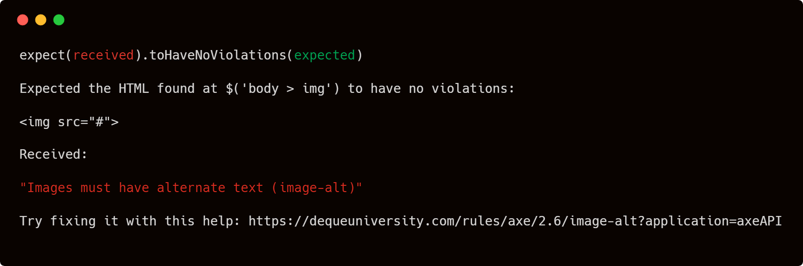

# Enterprise Grade Accessibility for Everybody picture of the enterprise --- <img height="400px" src="dist/illustrations-spot-DFTC.svg"> <div style="font-family: 'Charlie'">Don’t #@!%<br> the customer</div> --- <ul> <li class="fragment">The European Accessibility Act (28 June)</li> <li class="fragment">Section 508</li> <li class="fragment">Disability Discrimination Act 1992</li> </ul> --- - Automated tooling - Knowledge sharing - Bringing in the experts --- Automated tooling - low barrier to entry - cheap to setup & run - don't require expert knowledge - raise awareness of a11y issues - get people asking questions --- <div style="display: flex; align-items: center; justify-content: center; gap: 2 em"> <a href="https://testing-library.com/">testing-library.com</a> <img src="dist/rtl-logo.png"> </div> --- `getByRole()` `queryByRole()` `findByRole()` --- `screen.getByRole('button')` <button>Click me</button> `screen.getByRole('combobox')` <input type="number"> --- example of some kind of element with no role that can't be queried by getByRole because the role is missing and then also the example of how to fix it. Maybe tabs or something --- examples of getByRole('input', { name: 'something' }) using text/aria-label/label --- examples of bad accessible names - no labels, button with no text, link with "Click here" text --- demo of checking accessible name in dev tools. a button with text + label + aria-label + aria-labelledby or something --- ``` const { container } = render(<MyComponent />) await expect(container).toBeAccessible({ violationCount: 2 }) ``` --- https://www.npmjs.com/package/jest-axe ``` import { axe, toHaveNoViolations } from 'jest-axe' expect.extend(toHaveNoViolations) it('should demonstrate this matcher`s usage', async () => { const { container } = render(<MyComponent />) expect(await axe(container)).toHaveNoViolations() }) ``` ---  --- Linting tools --- eslint-plugin-jsx-a11y https://www.npmjs.com/package/eslint-plugin-jsx-a11y axe DevTools linter https://www.deque.com/axe/devtools/linter/ --- Tools that run in the browser - lighthouse - accesibility insights --- Design Systems --- Automated tooling can only tell us if something is NOT accessible --- Accessibility depends on context --- <img src="dist/DS9-skants-combined.jpg"> alt: three star fleet officers in uniform. the captain's uniform is red, the medical officer's is blue, and the engineer's is gold. --- <img src="dist/DS9-skants-combined.jpg"> alt: Captain Sisko, Doctor Bashir and Chief O'Brien's faces pasted onto an officer wearing the skant uniform, in the appropriate colour. All 3 have uncomfortable facial expressions https://startrekcostumeguide.com/2022/02/tng-skant-crew-gallery/ --- A11y begins with design --- Knowledge sharing --- how to upskill yourself (and other interested people) certifications --- PR comments & design annotations --- Slack channel where people can ask questions and more knowledgable people can answer them We've got an AI agent to help with this. Speeds up writing answers, but definitely requires monitoring & checking by experts